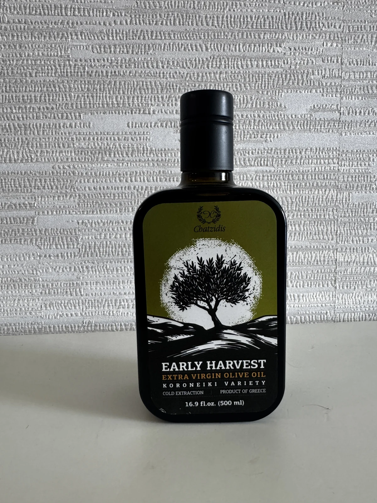

Signature · 500 ml
Early Harvest
Early Harvest
Extra Virgin Olive Oil
Our signature square bottle. Early-harvest Koroneiki olives, cold-extracted in Greece for an authentic expression of the olive fruit.
Koroneiki variety · Cold extraction · Product of Greece